● ОбъектыОбъекты
Город за бетонной стеной: типография Константина, корпорация «Василиск», ломбард с подземельем Мнемозины, полиция, вокзал и улицы «Новичка». Каждая декорация снята в два направления; здесь — прямой план.
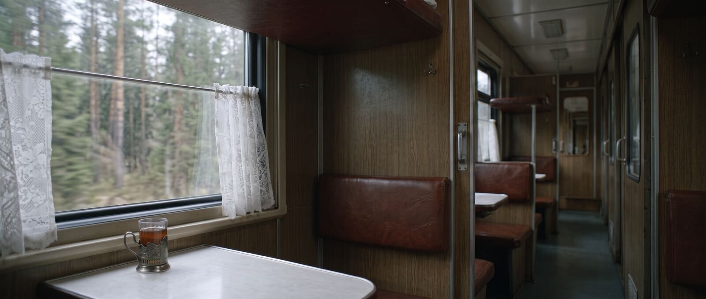
Купе
Шпон, полки, подстаканник, тюль, сосны за окном. Кира и Эмилия Марковна едут в город; в финале здесь Кира и Ник с книгой. С1, С8
Павильон строится купе и кусок коридора; окно — генерация
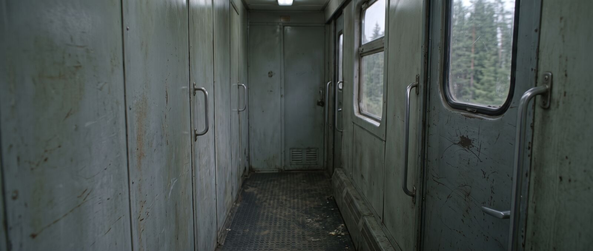
Тамбур
Внешняя дверь, окно, рубчатый пол. Проводник хватает Киру — и выпадает в проём после платка Эмилии. С1
Павильон строится тамбур; пейзаж за дверью — генерация
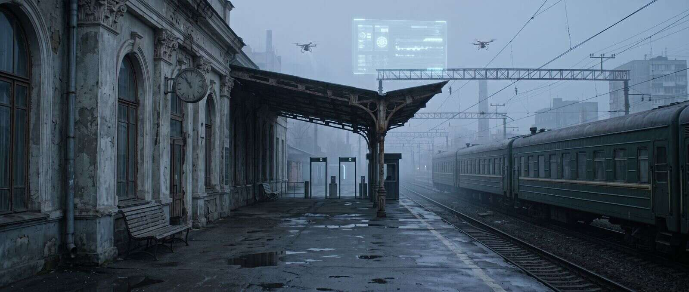
Перрон вокзала
Сталинский вокзал, голографическая реклама «НейроКонтроля», сканеры на выходе, дроны. Обратка — к бетонной стене города. С2, С6, С8
Павильон платформа и скамейка в павильоне; вокзал, поезд и стена — генерация
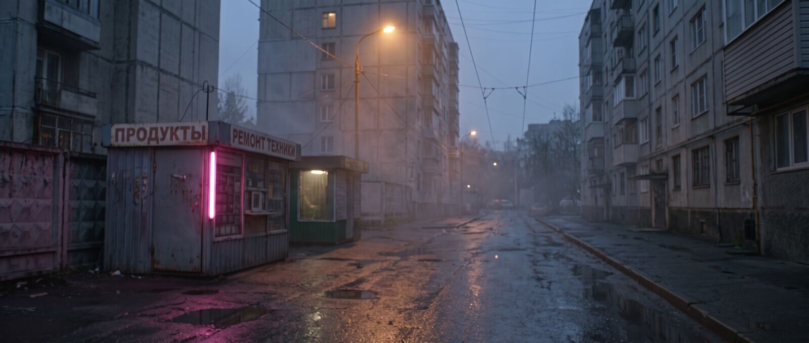
Ночная улица с киосками
Единственная локация, где неон в полную силу: натриевый фонарь, розовая вывеска киоска, лужи, туман между панельками. С1–С3, С6, С7
Павильон два киоска и отрезок асфальта; панельки и дальний план — генерация
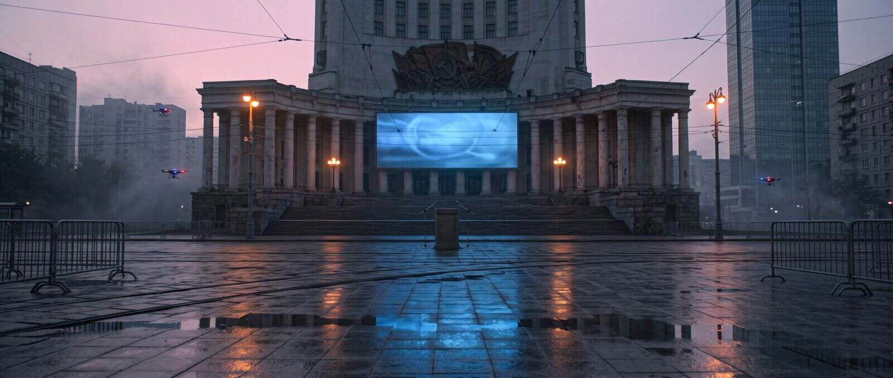
Площадь у Дома Культуры
Сталинский ДК с экраном на фасаде, трибуна, толпа, полицейские дроны. Здесь Феликса закрашивают краской с коптера. С1, С3
Павильон трибуна и барьеры; фасад ДК и экран — генерация
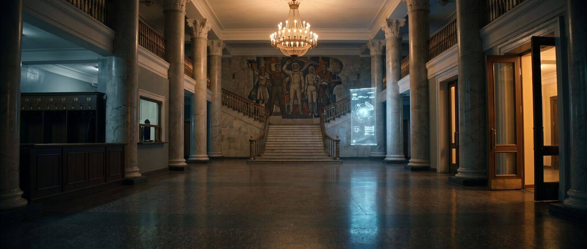
Фойе ДК
Мрамор, мозаика, гардероб с номерками, голографический баннер у лестницы. С4
Павильон натура — любой ДК сталинской постройки; голобаннер — генерация
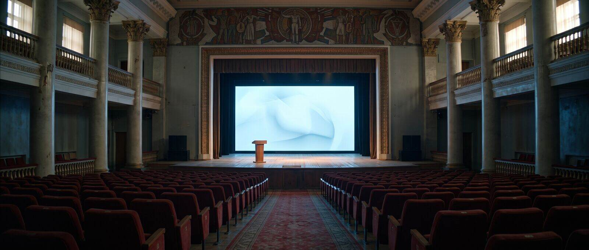
Главный зал ДК
Красный бархат, сцена, огромный экран — презентация Василисы и объявление чемпионата. С4
Павильон натура; экран и Василиса — генерация
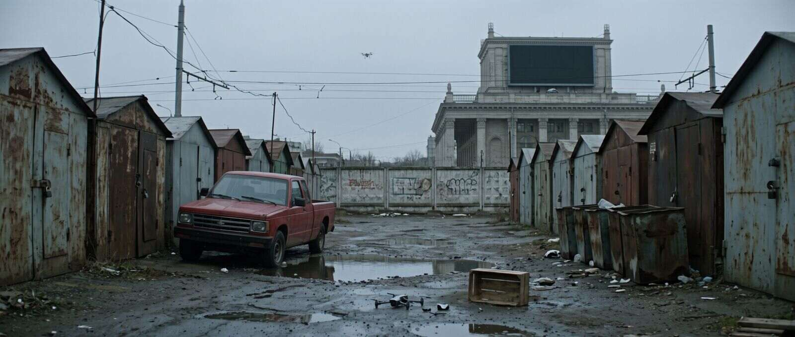
Двор у гаражей
Пикап между гаражами, перевёрнутый ящик, разбитый коптер. Штаб Андрея и Ника, куда приходит Виктор с флешкой. С1
Павильон натура: гаражный кооператив; дроны — генерация
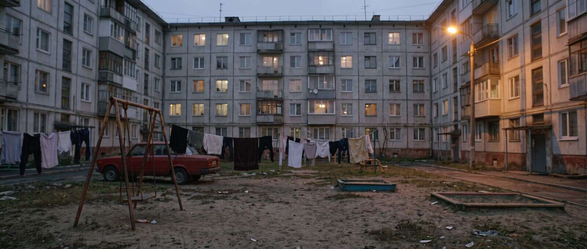
Двор хрущёвки
Качели, бельё на верёвках, лавка, бетонный забор, свет из окон. С2
Павильон натура
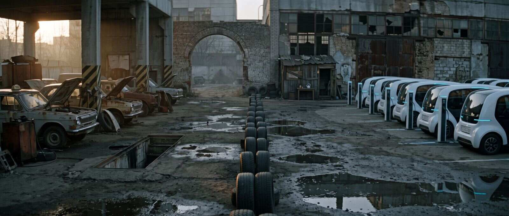
Таксопарк Аслана
Ржавые «Волги» рядом с белыми беспилотными такси, трасса из покрышек, арка. Гонка коптера против машины. С4
Павильон натура: старый таксопарк; беспилотные такси и зарядка — генерация
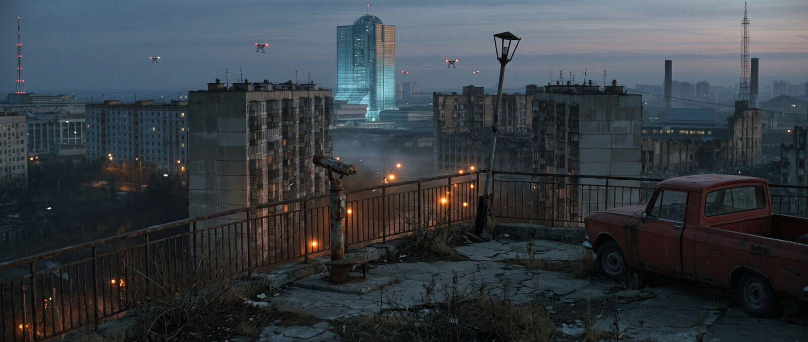
Смотровая площадка
Заброшенная площадка на холме, телебашня, город в огнях. Первый полёт Киры от первого лица. С5
Павильон площадка в павильоне; город внизу — генерация
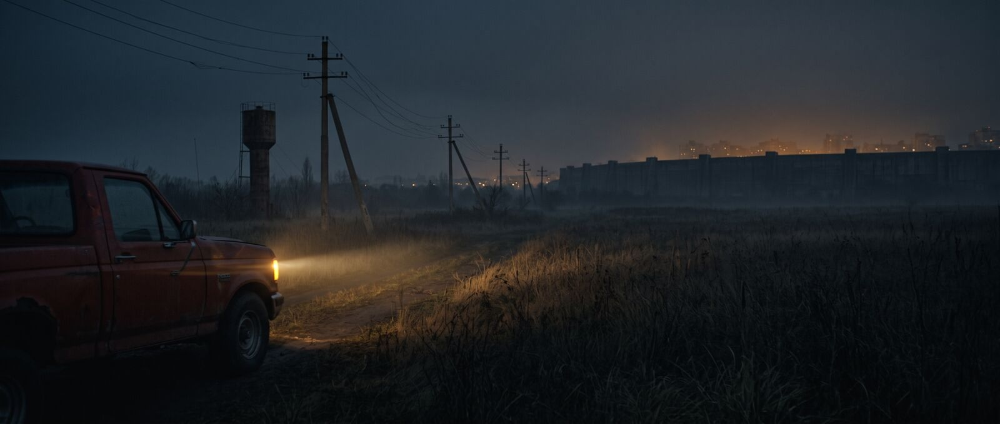
Пустырь за городом
Высокая трава, фары пикапа, голограмма Василисы, кольцо байкеров Быка. С5
Павильон натура; стена и город на горизонте — генерация
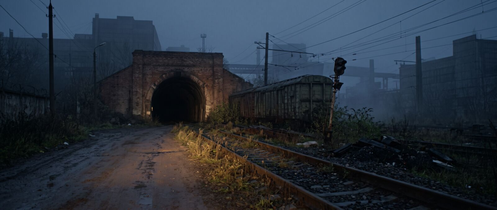
Ж/д ветка и тоннель
Заброшенные рельсы, старые вагоны у входа, тоннель к запасным путям типографии. Погоня с Кирой за рулём. С5
Павильон натура; обрушение вагонов — генерация
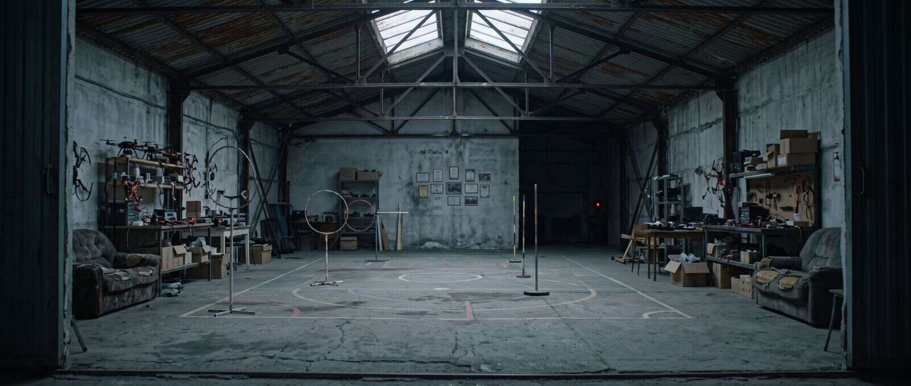
Ангар
Секретное место тренировок: старые коптеры, грамоты на стене, красный глаз камеры в углу. С6
Павильон натура или павильон
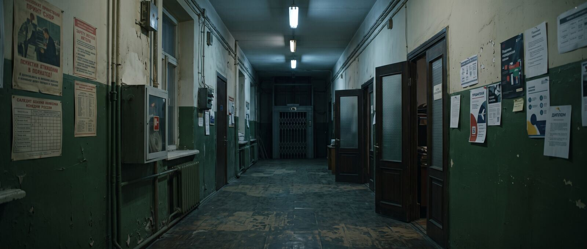
Коридор
Промышленное здание под офисы: линолеум, советские плакаты и новая графика, лифт с решётчатыми дверями. С1–С4, С6
Павильон павильон: один пролёт коридора и лифт-решётка
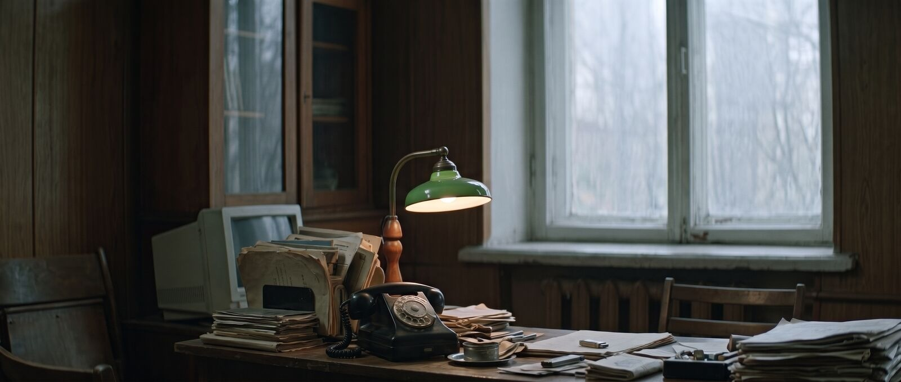
Кабинет Константина
Огромные окна на город и ДК, ламповый приёмник, газеты, виски, зелёная лампа, медкарта. С1–С5
Павильон павильон; город за окнами — генерация
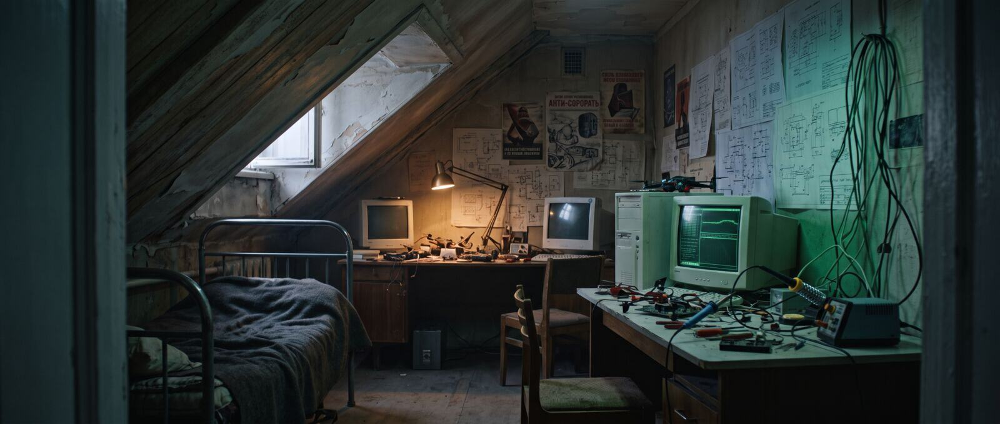
Комната Андрея
Чердак: детали коптеров, ЭЛТ-мониторы, чертежи, антикорпоративные плакаты. Здесь Ник вставляет флешку. С1, С4, С5
Павильон павильон
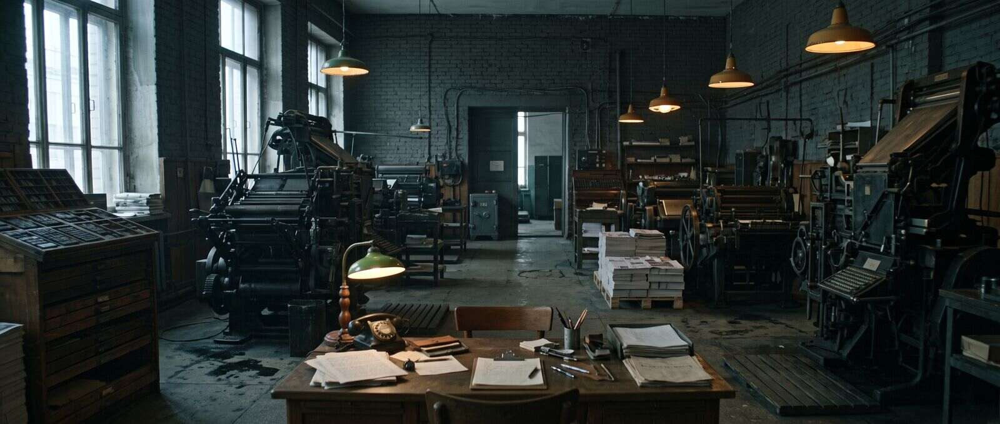
Печатный цех
Грохот станков, запах краски, свинцовый шрифт, сундук для электроники у входа. С2, С5
Павильон натура: действующая старая типография
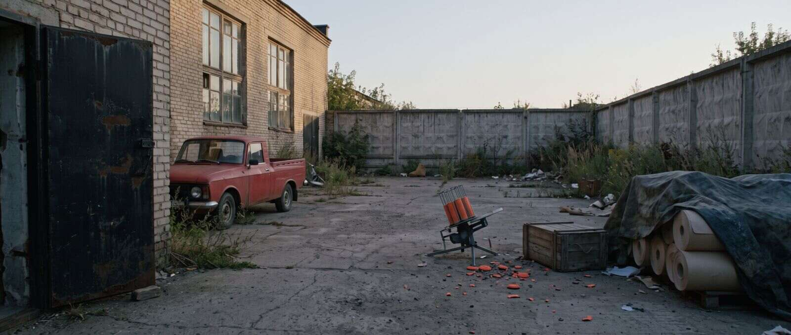
Задний двор
Стрельба по тарелочкам, пикап у чёрного хода. Урок Константина: «никогда не доверяй чужим игрушкам». С2, С4–С6
Павильон натура у типографии
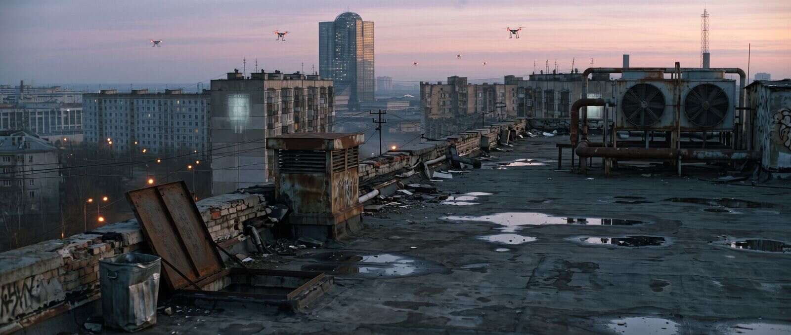
Крыша
Край крыши, вентшахта, бак. Позже — система охлаждения серверов, в которую Аслан пускает туман. С3, С7
Павильон натура; город и дроны — генерация
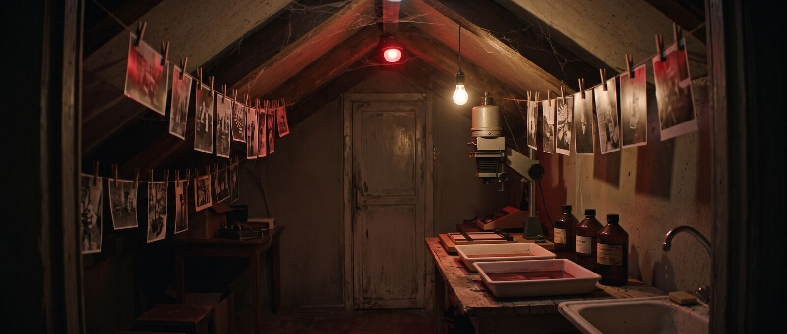
Фотолаборатория
Чердак с красным фонарём, фотографии на верёвках, увеличитель, потайной проём в стене. Проявка плёнок матери Киры. С3
Павильон павильон
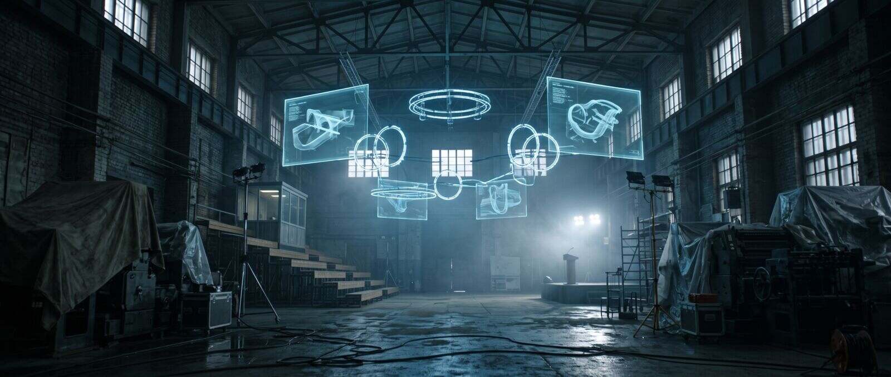
Главный зал — арена
Цех, превращённый в арену чемпионата: голограммы на кирпиче, кольца трассы, деревянные трибуны, VIP-ложа. С7, С8
Павильон цех типографии + голограммы, кольца, толпа — генерация
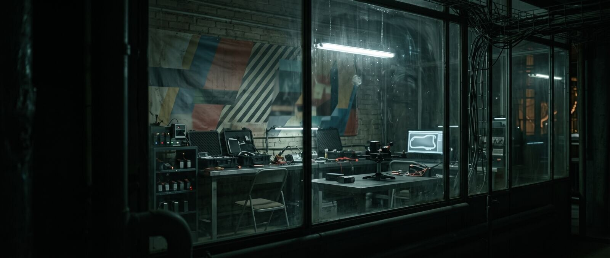
Техзона участников
Комната за стеклом: верстаки, зарядные стойки, дрон на стенде. Финал Константин — Андрей — Бык. С8
Павильон павильон: комната со стеклом
Секретный цех
Подвал со станком для печати наличности, бумага с микроволокнами, УФ-лампа, крышка пневмопочты. Здесь печатают книгу с кодом Мнемозины. С7, С8
Павильон павильон; станок — реквизит
Ломбард дяди Яши
Музей советской техники: приёмники, детали дронов, ламповый телевизор с помехами, дисковый телефон, стена с часами — вход в тоннели. С1, С3, С6–С8
Павильон павильон: прилавок, стеллажи, витрина
Подвал ломбарда
Стеллажи с радиодеталями, шкаф с красной маркировкой, панель «ПРОЕКТ М» с рычагами-нейронами. Ник решает головоломку Лебедева. С3, С8
Павильон павильон; панель «Проект М» — реквизит
Коридор в стенах
Технический ход с трубами «Проект М», синими разрядами и граффити «Мнемозина видит всё — Лебедев». Дверь Поста связи №7 с телетайпом. С3, С8
Павильон павильон: один поворот коридора; разряды — генерация
Круглый зал Мнемозины
БЭСМ-6, Сетунь, осциллограф с синусоидой-сердцем, фото учёных на стенах, люк в ломбард. Здесь всё началось в 1989-м и заканчивается в финале. С3, С6–С8
Павильон павильон: консоль и два шкафа; остальной круг — генерация
Тоннель лаборатории
Влажный мрамор, трубы, ЭЛТ со статикой, телетайп — проход к залу. С3
Павильон павильон: отрезок тоннеля
КПП
Стеклянная будка, шлагбаум с гекс-синей полосой, вывеска «ВАСИЛИСК». Ночью — байкеры Быка. С1, С7
Павильон павильон: будка и шлагбаум; башня — генерация
Холл
Полированный бетон, стойка из дымчатого стекла, турникеты, голограмма карты города. Контракт с пунктом 7.3. С1
Павильон натура: бизнес-центр; голограмма — генерация
Конференц-зал
Панорамное окно на город, стеклянный стол, голографический график, робот-пылесос у стены. С1, С4
Павильон натура; панорама города — генерация
Серверная
Стойки с синими точками, стеклянный куб с креслом Феликса, красная подсветка «протокола», терминал пневмопочты, детонаторы. С1, С2, С7, С8
Павильон павильон: три стойки и куб; глубина зала — генерация
Техническая лаборатория
Белая чистая комната, коптер в силовом «коконе», техники в белом, кейсы с маркировкой V. С4
Павильон павильон; кокон и голограммы — генерация
Тренировочный полигон
Бетонный двор бывшей военной базы: башни-препятствия, тоннели, ворота с подсветкой, смотровая площадка Феликса. С4
Павильон натура: бетонная площадка; препятствия и ворота — генерация
Старый корпус
Заброшенный советский институт на территории: облупленная краска, разбитые лаборатории, красная аварийка. С1
Павильон натура: заброшенный институт
Студия презентации
Белые стены, голограммы города и графиков, подиум. «НейроКонтроль — ключ к идеальному будущему». С1
Павильон павильон: белый циклорама; голограммы — генерация
Улица у корпорации
Служебный вход, трансформаторная будка, ворота северного крыла. Коптер Андрея врезается в будку, чтобы открыть ворота. С7, С8
Павильон натура; взрыв будки — генерация
Комната допроса
Облупленные оливковые стены, стальной стол, фотографии, красная лампа записи. Василиса — невидимая для допрашиваемых. С5, С6
Павильон павильон
Кабинет Виктора
Грязные жалюзи, серый рассвет, стол в бумагах, бутылка, браслет Наташи в пакете, робот-пылесос в углу. С5–С7
Павильон павильон
Коридор участка
Скамейка Ника, экран с материалами дела, дежурная часть с телефонами, кофейный автомат. 47 секунд слепой зоны. С5, С6, С8
Павильон натура или павильон
Камера
Койка, решётка, вентиляция — через неё Бык пускает газ, чтобы увести Константина. С6
Павильон павильон